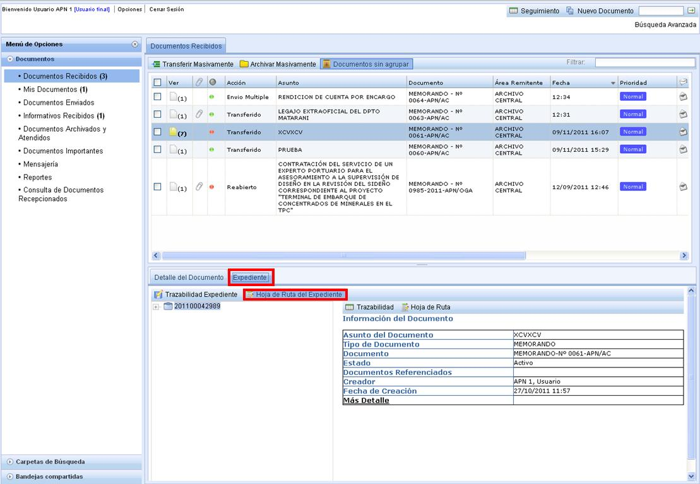
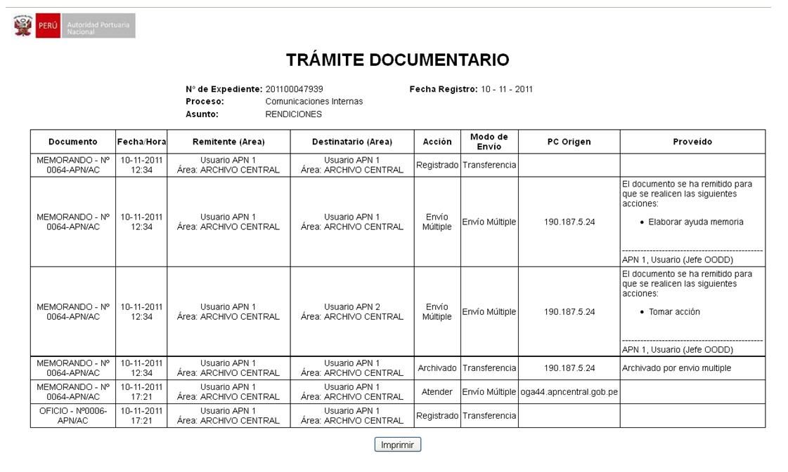

Hoja de Ruta del Expediente:
Para que el usuario pueda visualizar la Hoja de Ruta por Expediente debe de ingresar a la pestaña Expediente como se muestra en el gráfico y luego debe de seleccionar "Hoja de Ruta por Expediente".

Una vez seleccionado se muestra una pantalla como la siguiente: En donde existe además la opción de Imprimir.

Created with the Personal Edition of HelpNDoc: Full featured Help generator